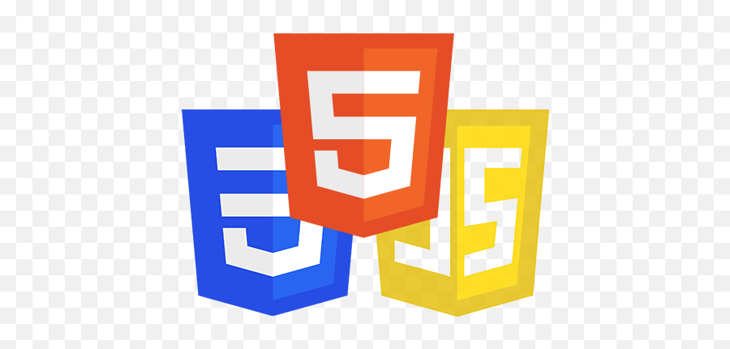
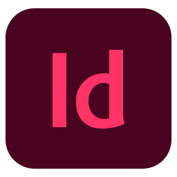

Compétences
A travers ma formation en UI/UX design, je construis des interfaces pensées pour les utilisateurs,
en conciliant besoins réels ergonomie et ésthétique.
Outils de UI/UX design et prototypage
-
 Maquette interactive, prototypage, design system
Maquette interactive, prototypage, design system
-
Écrire et modifier du code HTML, CSS et JavaScript pour créer des interfaces web.
- Collaborer via Git/GitHub pour le versionnage du code.
Outils de developpement front-end
-

Maitrise du langage HTML,CSS & Javascript
- Création d'un portefolio intéractif
Outils de création graphique - Suite Adobe
-
 Création de visuels, logos et icônes
Création de visuels, logos et icônes
-
 Création de logos
Création de logos
-

Création de flyers, Mise en page de la charte graphique
CMS - Système de gestion de contenu web
-
Création site internet responsive